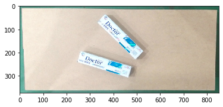
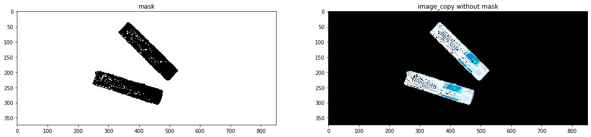
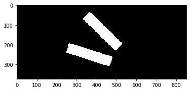
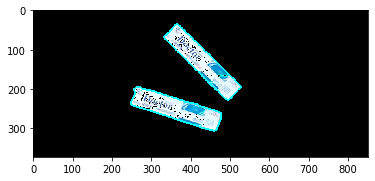
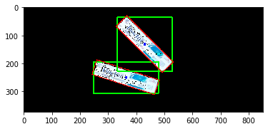

03-牙膏盒检测¶
检测图标图片中的牙膏盒
导入依赖¶
import matplotlib.pyplot as plt
import numpy as np
import cv2
%matplotlib inline
加载图片¶
src = cv2.imread("images/pic9.png")
image_copy = np.copy(src)
image_copy = cv2.cvtColor(image_copy, cv2.COLOR_BGR2RGB)
plt.imshow(image_copy)

去掉背景¶
- 通过将图片转成HSV格式，背景的颜色值范围，筛选出背景内容 (mask中亮的部分)
- 通过掩膜（遮罩）将原图中的背景部分去除（设置为黑色）
# 过滤出背景
hsv = cv2.cvtColor(image_copy, cv2.COLOR_RGB2HSV)
mask = cv2.inRange(hsv, (0, 5, 5), (88, 255, 255))
# 去除背景
img = image_copy.copy()
img[mask != 0] = [0,0,0]
# 显示
f, (ax1, ax2) = plt.subplots(1,2, figsize=(20,10))
ax1.set_title("mask")
ax1.imshow(mask, cmap='gray')
ax2.set_title("image_copy without mask")
ax2.imshow(img)

形态学关操作¶
kernel = cv2.getStructuringElement(cv2.MORPH_RECT, (5, 5))
dst_img = cv2.morphologyEx(img, cv2.MORPH_CLOSE, kernel)
dst_img = cv2.cvtColor(dst_img, cv2.COLOR_RGB2GRAY)
ret, binary = cv2.threshold(dst_img, 10, 255, cv2.THRESH_BINARY)
plt.imshow(binary, cmap='gray')

查找轮廓¶
_, contours, hierarchy = cv2.findContours(binary, cv2.RETR_EXTERNAL, cv2.CHAIN_APPROX_SIMPLE)
print("找到轮廓个数:", len(contours))
temp_img = img.copy()
cv2.drawContours(temp_img, contours, -1, (0, 255, 255), 3)
plt.imshow(temp_img)
output: 找到轮廓个数: 2

多边形逼近¶
final_img = img.copy()
for i, cnt in enumerate(contours):
# cv2.drawContours(img, contours, i, (0, 255, 255), 2)
# 获取矩形区域
x, y, w, h = cv2.boundingRect(cnt)
# 计算多边形的矩
mm = cv2.moments(cnt)
if mm['m00'] == 0:
continue
cx = mm['m10'] / mm['m00']
cy = mm['m01'] / mm['m00']
# 计算周长
cnt_len = cv2.arcLength(cnt, True)
# 获取近似曲线
# 参数2：epsilon 逼近程度阈值
# 参数1：close 是否为闭合区域
approxCurve = cv2.approxPolyDP(cnt, cnt_len * 0.02, True)
curve = approxCurve.shape[0]
# 计算轮廓的面积
area = cv2.contourArea(cnt)
print(cv2.isContourConvex(cnt))
# 面积大于1000, 边个数至少4个
if area > 1000 and curve >= 4:
# 绘制正矩形框
cv2.rectangle(final_img,(x,y),(x+w,y+h),(0,255,0),3)
# 绘制中心
cv2.circle(final_img, (np.int(cx), np.int(cy)), 5, (0, 0, 255), -1)
# 计算最小矩形区域
rect = cv2.minAreaRect(cnt)
# 获取盒子顶点
box = cv2.boxPoints(rect)
# 转成long类型
box = np.int0(box)
# 绘制最小矩形
cv2.drawContours(final_img, [box], 0, (255, 0, 0), 2)
# cv2.drawContours(final_img, contours, i, (255, 0, 0), 3)
print("{}------宽高比: {} 中心: {} 面积: {} 边个数：{}".format(i, min(w, h) / max(w, h), \
(round(cx,2),(round(cy,2))), area, curve))
plt.imshow(final_img)
output:
False
0------宽高比: 0.48917748917748916 中心: (364.29, 250.43) 面积: 11423.0 边个数：5
False
1------宽高比: 0.9846153846153847 中心: (430.42, 132.08) 面积: 11489.5 边个数：4
